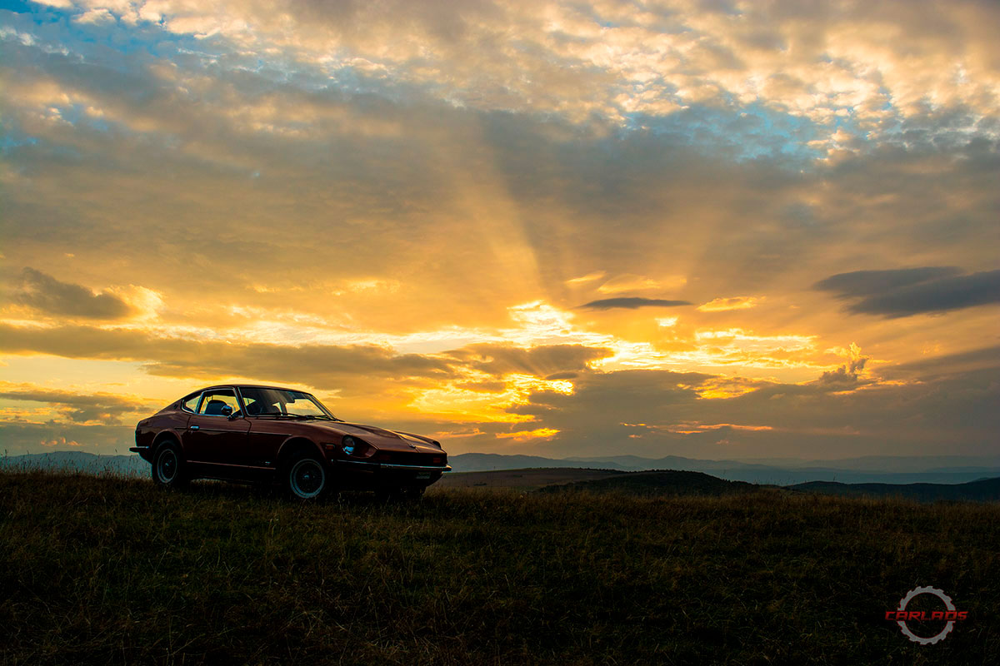
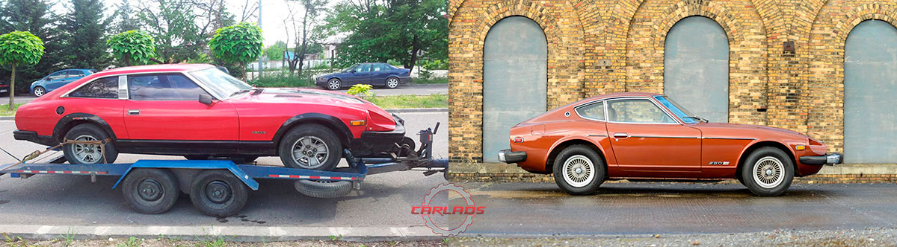
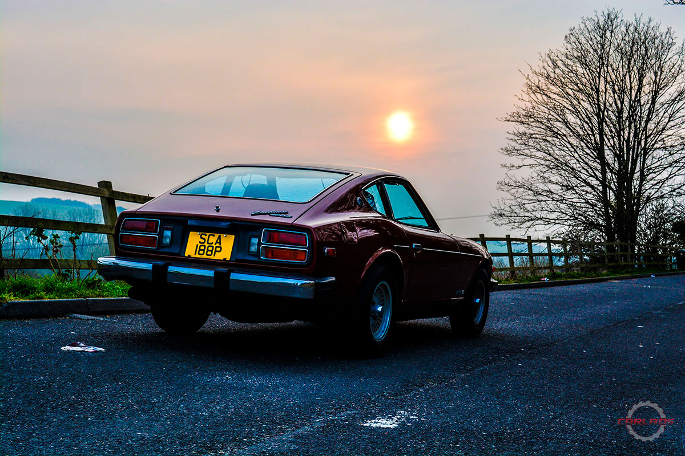
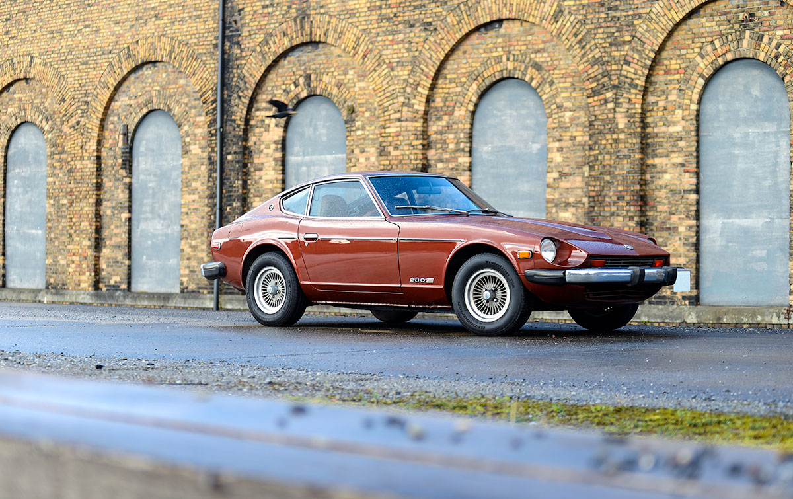
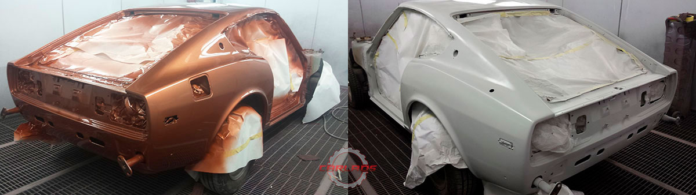
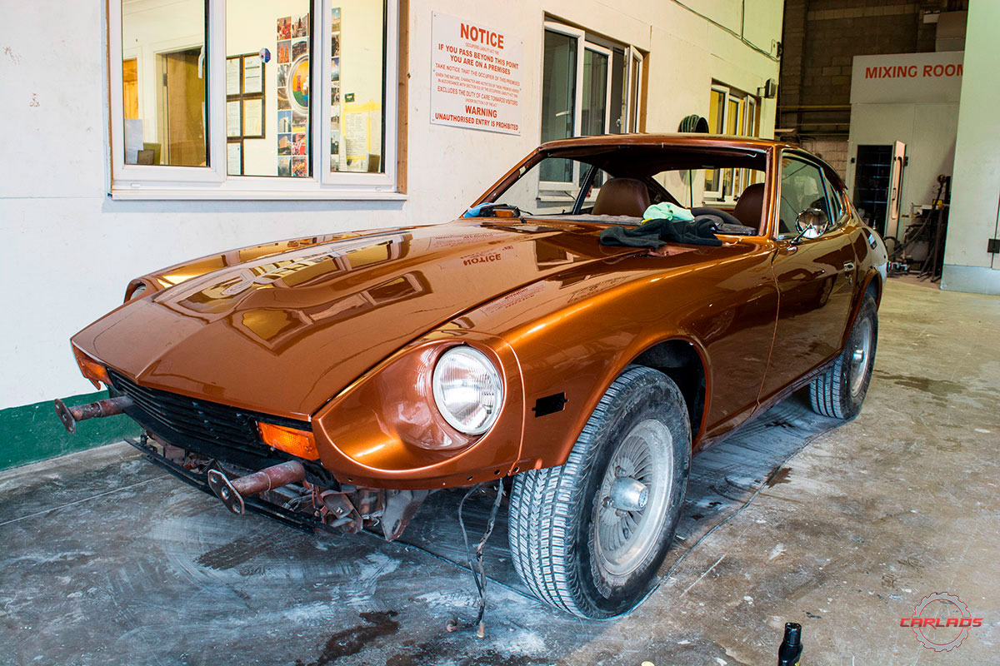
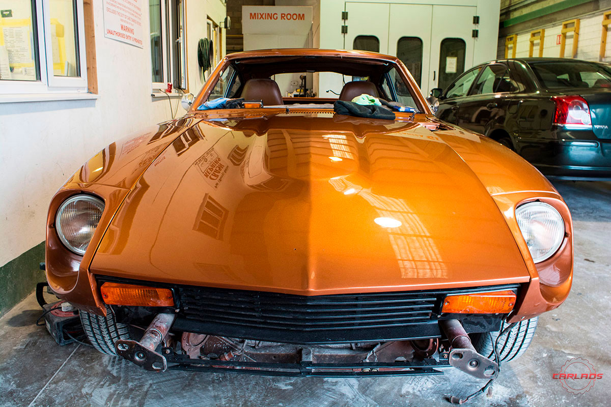
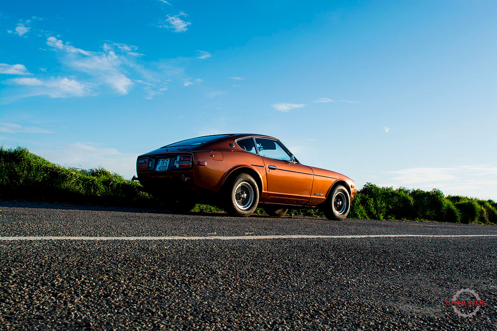

1976 Datsun 280Z-A long journey
The Datsun 240Z, also known as Nissan S30, or the Fairlady Z in Japan, first came out in 1969 as a 2-seater sports RWD sports car, powered by a howling 2.4 straight six engine. It was soon launched to the US market by Yutaka Katayama (better known as Mr.K). Mr. K suggested that the american customers wouldn't enjoy the "Fairlady" name, so he just used the Z that was added to the 240, thus coming up with the name known today: The Datsun 240Z. In 1974, the 240 was replaced by the 260Z. This came as a 2-seater or a 4 seater (the 2+2), which had a slightly different roof and rear window. The engine was bored to 2.6 with the car itself receiving some upgrades.
The Datsun 280Z was the last of the S30 chassis, with the overall look unchanged. The carburettors were replaced by fuel injection, and, in the US, the car received bigger bumpers (affectionately known as park benches) to comply with the US safety regulations. In 1979, the model was replaced by the Datsun 280ZX.
The Datsun Z was one of the most popular cars in the 70's. They were a cheap sports cars that were able to compete with big names such as Porsche and Jaguar, with good looks, somewhat more reliable but with a smaller price tag. Today, they are somewhat difficult to find and the only (still) rust free examples come from California in the United States.
The story of this Z starts...with a ZX
The story of Alex Bodi’s Datsun addiction starts a number of years back, when he got a call late one night from a friend saying that he found the perfect car for Alex. He went online sees the car, a Datsun 280ZX in very poor condition that was selling pretty cheap. Alex did not know much about them at the time, he had never seen one in person and hardly had any idea what the car was, but it looked interesting and he wanted it.
He bought the ZX from photos he had seen online and hadn’t seen the car in person until it arrived to his door on a trailer. It was in such a bad shape that it couldn't even drive off the trailer and the body was so bad that he had to rebuild a huge amount of the car, and restoring it meant that a lot of research had to be done.
Alex spent countless hours on the internet searching for information on his Datsun and every time he typed "Datsun 280ZX", the first images always showed up the earlier 280Z model. The seed was planted.
In the years since Alex owned that 280ZX, things changed a lot for him. He sold his autobody shop in Romania, moved to Ireland, decided to get married and somehow managed to buy a Z. Not just anyZ, but one with a lot of history and only 2 previous owners.
It was a rust free California car that Alex had to import to the UK. Once the car was imported to the UK it was registered so that he could drive it home to Ireland, and it took over a month just waiting for all the paperwork to clear, but it was all worth it.
The call came on a Thursday: "the car is ready", that's when everything got kicked into high gear. Alex wanted to drive the car instead of hauling it on a trailer, and that’s when the worry started. Was the car able to be driven such a distance? What if he gets there and the car isn't as advertised? Eight days later Alex was on a plane with his Fiancé heading to Southampton, UK.
They had a very long drive ahead of them, with a 40 year old car that neither of them were too sure was serviced, LHD on a RHD roads and on top of that Alex couldn’t drive it. While trying to insure the car, Alex was still waiting for his Irish driving licence, so had no valid drivers license at the time. This meant that Melinda had to drive the car while still in the UK making everything a lot worse. No power steering, old brakes, only one mirror on the left side. Alex was worried. Did he just buy a car that doesn't work properly, that his Fiancé now had to drive across the country?
She drove from New Milton, Hampshire to Pembroke Dock where the ferry that would take them home was waiting, with no issues, she even enjoyed the car. Never complained, never hadsomething negative to say about it, just kept on driving. Alex said he really didn’t enjoy sitting in the passenger's seat, but at least he could just listen to the car, fiddle with all the dials on the dash, study all the trims on the passenger side, the oil stain on his jeans, play with his phone, his keys, even with one of his shoes at one point.
The car was working fine, no weird noises or vibrations and it got them home safe where it finally stopped working, engine died and would not start. With some fiddling the next day though, the Z started and never gave me any major issues since then.
The overall condition was good. There were no rust isues and the interior was fairly good, the paint was fine with a few dents here and there. Not bad but not good enough either.
But Alex is a man of action that likes to have his cars in top shape, so the Z went into the shop for a light restoration. A bunch of parts were ordered from the US, this because there isn't much support for these cars in Europe. New windscreen, new chrome mirrors, new carpets, a complete rubber seals kit, even a set of early 240Z bumpers so the car would lose the park benches.
Soon after it arrived in Ireland, even before it had the new Cork plates, the car was stripped down too have the body fixed and painted.
Everything was done properly, with everything taken off the car, no unnecessary filling and with proper materials. The paint chosen was the original colour, the paint code being still under the bonet.
It took about 3 weeks to prep and paint the car, another week to reasemble everything back.
With 5 layers of clearcoat and a deep polish, with all the trims and lights refurbished, with the smaller bumpers on the way, things were looking good. The Z was looking good too.
 It was May 2016 when the car was out of the shop. The weather was getting warmer and it was about time the Z was shown the Irish roads
I asked Alex at the end of our photoshoot what the car means to him. In his own words:
In his own words: I wake up in the morning and the first thing I do, while waiting for my coffeemaker to do it's job, is go to the car and say "hello". I feel like we have a special bond, it's like "you take care of me and I'll take care of you". The feeling while driving it can't really be explained with words, I can only say it feels special, I feel special. When it's just me and the car, on a back road with not too much traffic, hearing the engine roar, feeling the surface of the road translated to my hands through the steering wheel and the gearshifter, mixed with the ruggedness that only old schools cars have, with the smell of petrol and and "old upholstery", I just feel like all I want to do is keep going.
